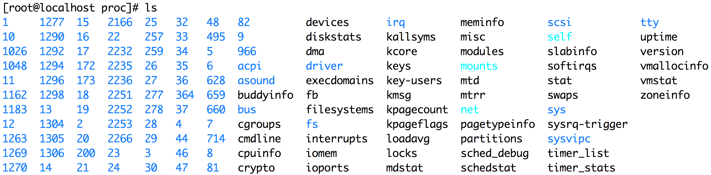
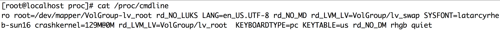
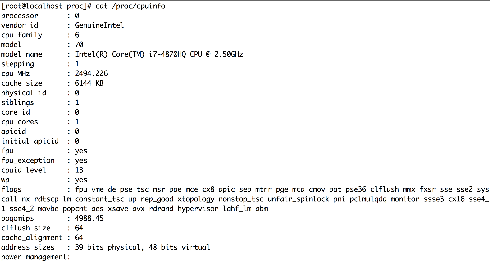

Exploring /proc with Friends
Created by Alex Juarez / @mralexjuarez
Agenda
- So why this topic?
- My favorite Interview Question
- What is the /proc filesystem?
- System wide /proc files
- Exploring the PID forrest
- Interacting with /proc
- Extended Learning
- Q/A
But first! History
- 1st Written 1984 - 8th Ed. Unix
- 1992 - Plan 9 restructures layout
- 1992 - Solaris and Linux follow suite
- 1996 - Full implmentation in Solaris
Why this topic?
My Favorite Interview Question
Let's start with a demo
Setting the Scene
You are working away on a configuration and accidently delete a number of open log files currently in use.

Why is this my favorite?
It's rare anybody solves this question right away.
But when they do....
There is always a story.
Demo Time!
What is the proc filesystem?
/proc
A pseudo filesystem that acts as an interface to the kernel. It gives us real-time access to stats as well as the abality to change some tuneables.
A pseudo filesystem
Not buying it?
- Files in /proc are virtual files
- Files containing a fair amount of data will show up as a Zero byte size.
- Most of them will have the same current timestamp
# watch stat /proc/cpuinfo
Documentation
We all stand on the shoulders of giants.
https://www.kernel.org/doc/Documentation/filesystems/proc.txtTop-Level /proc files
Top-Level /proc files
Let's go over some of the useful top-level files.
/proc/cmdline
Information about the arguments passed to the kernel at boot time.
Because: Have you seen the grub2.cfg file?
/proc/cpuinfo
Information about the cpu(s) on the system.
Useful When: You need to see the flags your CPU offers up i.e. Can we do virtualization?
/proc/cpuinfo
/proc/loadavg
- 1,5 and 15 Minute Averages
- Current Running Process / Possible Entities
- The last PID assigned out
Exploring the PID forrest
Each process has it's own story
Exploring the PID forrest
For each process there is a directory under /proc that corresponds to the processes PID.
/proc/<PID>/cmdline
This file contains the command line for the process.
Useful When: A process looks suspicious in the output of common tools.
/proc/<PID>/environ
This file contains the processes environment variables.
Useful When: You think environment variables might not be passed or available.
/proc/<PID>/fd/*
This directory contains symbolic links to open files.
Useful When: You need to see if a file is being used or need to attempt to recover a file.
proc/<PID>/{maps,smaps}
These files report on a processes memory usage.
- maps - Information about the mapped memory regions
- smaps - An extension of maps showing more details about the mapping
proc/<PID>/{stat,status}
Both stat and status give the status of the process with status being a bit more human readable.
- stat - Not easy to read
- status - Somewhat easier to read
/proc/<PID>/oom_score_adj
/proc/<PID>/oom_score
These files determine how likely it is a process will be killed off by OOM-Killer (Out-of-Memory Killer)
oom_adj is one of the files we can adjust per-process from the range of -1000 to 1000 with the lower numbers being the lest likely to be killed off.
Interacting with /proc
Getting the PID of a process
# pgrep -uroot httpd
Use pgrep to get any httpd processes run by root# pidof httpd
Get all PIDs associated with the httpd process# cat /proc/self/cmdline
/proc/self refers to the currently executing process# cat /proc/$$/cmdline
$$ is a bash variable for PID
Tuning kernel parameters /proc/sys
Files under /proc/sys are unique because they expose the kernel variables which are tunable
All the Tuneables
# sysctl -a kernel.sched_child_runs_first = 0 kernel.sched_min_granularity_ns = 1000000 kernel.sched_latency_ns = 5000000 kernel.sched_wakeup_granularity_ns = 1000000 kernel.sched_tunable_scaling = 1 kernel.sched_features = 3183 kernel.sched_migration_cost = 500000 kernel.sched_nr_migrate = 32 kernel.sched_time_avg = 1000 kernel.sched_shares_window = 10000000 kernel.timer_migration = 1 kernel.sched_rt_period_us = 1000000 kernel.sched_rt_runtime_us = 950000 kernel.sched_compat_yield = 0 kernel.sched_rr_timeslice_ms = 100 kernel.sched_autogroup_enabled = 0 kernel.sched_cfs_bandwidth_slice_us = 5000 kernel.panic = 0 ...
The kernel tunables
A kernel tunable
net.ipv4.icmp_echo_ignore_all = 1
The path
cat /proc/sys/net/ipv4/icmp_echo_ignore_all
Changing values in /proc/sys
A kernel tunable
echo 1 > /proc/sys/net/ipv4/icmp_echo_ignore_all
The path
sysctl -a | grep icmp_echo_ignore_all >> /etc/sysctl.conf
Extended Learning
Idea: Use strace to deconstruct common programs reading from /proc. Use the information to re-build common tools.
In Closing...
Contact Information
This hCard created with the hCard creator.
A short bio
Alex Juarez is a Principal Engineer at Rackspace, touting 8 years with the company. Alex enjoys all things Linux, especially training and mentoring others, and is incredibly qualified to do so as an RHCA/RHCI. When Alex isn't helping others he's crafting killer cocktails and finding the best spots to grub in San Antonio.
Thanks @jilljubsQ & A
(Or we can talk about Whiskey)